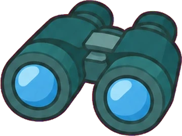
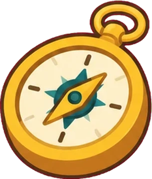
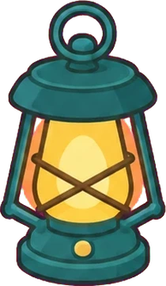
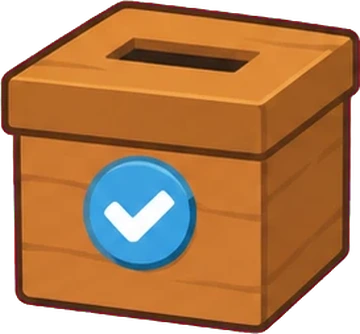

Introducción a la ciencia
de datos
Qué es, cómo se trabaja y dónde entra la IA.

Hoja de ruta
- Bienvenida: cómo funciona el curso15 min
- Introducción a la ciencia de datos40 min
- Entorno: GitHub, Git, Python y VS Code45 min
- Guía de entrega por PR45 min
- Cierre y tarea diagnóstica15 min · con dos pausas de 10 min
Bienvenida
¿Dónde cruzas datos en tu día?
Una app del celular, una compra, una ruta, un pedido… Escribe un ejemplo.
Cuatro reglas del juego
Islas y radar
Avanzas por islas y tu radar de 7 dimensiones se compara con tu propio punto de partida.
IA con declaración
Se permite usarla. Lo que no se permite es ocultarla.
Entrega por PR
Cada trabajo se entrega con el enlace de tu pull request, cargado en la app.

Diagnóstico sin nota
Fija tu punto de partida. No cuenta para aprobar.
8 semanas, 16 sesiones
Dos sesiones de 3 horas por semana. Primero trabajas solo y luego en equipo.
Fase individual
Fase en equipo
Siete dimensiones
Cada trabajo y cada práctica alimentan una o varias. Te comparas con tu punto de partida, no con nadie más.
Datos de ejemplo
Rúbricas de 5 niveles
La nota va de 1.0 a 5.0 y la regla siempre es visible. Puedes quedar entre dos niveles.
Cada criterio pesa distinto.
Se permite, y se declara
Lo que importa es la honestidad: se declara, no se oculta.
IA
La usaste: lo dices y dejas una bitácora de tres líneas.
IA
No la usaste: también lo declaras.
Todo por pull request
No recojo nada: tú cargas el enlace de tu PR en la app antes de la fecha límite.
El diagnóstico no cuenta para aprobar
Qué mide
Fija tu punto de partida para que el curso se ajuste a ti.
minutos máximo
Después de esta sesión, entregado por PR.
Todo está en un solo lugar

Radar y notas
Dónde estás y cómo vas.

Practicar
Sesiones cortas de 5 preguntas con XP y racha.

Relámpagos y votaciones
Participas desde el celular en clase.
Calendario y material
Qué toca cada sesión.
Introducción a la ciencia de datos
Ciencia de datos es convertir datos en decisiones
Nace donde se cruzan tres cosas.
Generas datos todo el tiempo
Tu celular
Guarda dónde estuviste y a qué hora.
Tus compras
Cada una queda registrada con monto y producto.
Tus búsquedas y «me gusta»
Dicen qué te interesa.
Un domicilio
Deja hora, ruta y tiempo de entrega.
Cuatro preguntas, cada vez más valiosas
Seis pasos, y el último trae preguntas nuevas
Vamos a recorrerlo con un solo ejemplo: una app de domicilios cuyos pedidos llegan tarde.
Pregunta
Una buena pregunta es concreta, se puede medir y cambia una decisión.
Datos
¿Qué datos necesito y de dónde los saco?
Base de datos de la empresa
Pedidos, horas, direcciones.
API externa
Clima y tráfico.
Archivos
CSV o Excel de otras áreas.
Limpieza
Los datos reales llegan sucios. Esta etapa suele ser la que más tiempo lleva.
Análisis
Exploramos y medimos para responder la pregunta.
Minutos de retraso promedio por franja · datos de ejemplo
Modelo
Cuando hace falta, un modelo aprende patrones para predecir.
Comunicar
En el almuerzo se retrasan más: refuerza repartidores entre 12 y 2.
Una frase y un gráfico para quien decide. El análisis no sirve si no se entiende.
¿Qué paso va justo antes de analizar?
Tres formas en que llegan los datos
Estructurados
Tablas con filas y columnas. Una base de datos de pedidos.
Semiestructurados
Con etiquetas pero sin forma fija. Un archivo JSON de una API.
No estructurados
Texto libre, imágenes, audio. Las reseñas de los clientes.
Tres roles que se cruzan
Ingeniería de datos
Construye los flujos que traen los datos y los dejan listos.
Análisis de datos
Explora, mide y cuenta lo que pasa con gráficos y números.
Ciencia de datos
Construye modelos que predicen o descubren patrones.
Cuando los datos ya no caben en tu computador
Volumen
Muchísimos registros.
Velocidad
Llegan sin parar.
Variedad
Tablas, texto, imágenes, sensores.
Elegir la herramienta por el tamaño
Cabe en memoria
Python y pandas, directo en tu computador.
No cabe
Spark, con un entorno ya armado en un Codespace de GitHub (sesión 7).
Un archivo de 5 000 filas con ventas del mes. ¿Qué usarías?
Tres capas, de lo general a lo específico
- IA: sistemas que hacen tareas que parecen requerir inteligencia
- Machine learning: aprende patrones de los datos
- IA generativa: crea texto, imágenes o código nuevos
Puede ayudarte en cada paso
Pregunta
Te ayuda a ordenar y afinar lo que quieres saber.
Limpieza y análisis
Propone código que tú revisas.
Comunicar
Te da borradores que tú corriges.
Úsala bien
Pedirle que explique un error. Comparar su respuesta con la documentación. Probar lo que propone.
Copiar sin entender. Confiar sin verificar. Ocultar que la usaste.
Los datos no son neutros
Reflejan a quién se midió y cómo. Un modelo entrenado con datos sesgados repite ese sesgo.
Una IA te devuelve código. ¿Qué haces primero?
Datos, decisión y criterio.
- Un proyecto de datos es un ciclo, no una receta
- Los roles se cruzan: lo importante es la pregunta
- La IA ayuda, y la declaras
Volvemos en 10 minutos
Estira las piernas. Al volver armamos el entorno.
Entorno
Cuatro herramientas, cada una con su trabajo
GitHub
Tu cuenta y tu portafolio: aquí vive tu código.
Git
Guarda cada cambio de tu código con su historia.
Python 3.12
El lenguaje del curso.
VS Code
El editor, con Jupyter, Black y Pylint.
Al terminar, todo debe estar así
- Cuenta de GitHub
- Git instalado
- Python 3.12
- VS Code con Jupyter, Black y Pylint
- Primer script:
import this
Cuenta de GitHub
Entra a github.com y crea tu cuenta.
- Usa un correo que revises
- Elige un usuario sobrio: será tu portafolio
- Activa la verificación en dos pasos
Git
Instálalo desde git-scm.com y comprueba que responde.
Python 3.12
Descárgalo desde python.org y marca la opción de agregarlo al PATH.
VS Code y sus extensiones
- Python: reconoce y ejecuta tu código
- Jupyter: notebooks dentro del editor
- Black Formatter: da formato al guardar
- Pylint: avisa errores y malas prácticas
Crea un archivo y ejecútalo
Black y Pylint trabajan por ti
Black
Da formato al código al guardar. Todos escribimos igual.
Pylint
Revisa el código y avisa errores y estilo.
Cuéntanos tu equipo
Sistema operativo, memoria y navegador. Nos ayuda a decidir qué herramientas corren en todos.
Salas de apoyo por sistema operativo
Si algo falla, pasa a la sala que corresponda a tu computador.
Windows
macOS
Linux
Arma tu entorno
Sigue la lista de verificación. Si te trabas más de 5 minutos, pasa a la sala de apoyo.
¿Para qué sirve Git?
Volvemos en 10 minutos
Si te faltó algo del entorno, ahora es buen momento.
Guía de entrega por PR
¿Qué es un pull request?
Una propuesta de cambios: «mira lo que hice en mi rama y súmalo». Es también la forma de entregar en este curso.
- Tiene un enlace propio que cargas en la app
- Deja la historia de tus cambios a la vista
- Es lo que un equipo real usa para revisar código
De tu computador al enlace
Crea un repositorio público
En GitHub: New repository. Ponle un nombre sencillo y marca la opción de agregar un README.
- Debe ser público para que se pueda revisar
- Nombre sugerido:
datos-expedicion
Clónalo y crea una rama
Trabajas en una rama, nunca directo en la principal.
Escribe tu README de prueba
Abre README.md en VS Code y agrega tu nombre y tres líneas sobre ti.
Guarda y sube tus cambios
Add prepara, commit guarda y push lo sube a GitHub.
Abre el pull request
- Entra a tu repositorio: GitHub te muestra Compare & pull request
- Escribe un título y una descripción corta
- Pulsa Create pull request
Copia el enlace del PR
El enlace de un PR termina en /pull/ y un número. Ese es el que se carga en la app.
Un issue por cada tarea
En GitHub Projects tienes un tablero personal. Cada trabajo es un issue, y el PR lo cierra.
Enlaza tu PR con el issue
Escribe Closes #1 en la descripción del PR.
Se cierra solo
Al fusionar el PR, el issue se cierra.
Lo hago en vivo, tú me sigues
Comparto pantalla y recorro los seis pasos. Después lo haces tú, en parejas.
Abre tu PR de prueba
Sigue los seis pasos. Quien termina primero ayuda a su pareja.
Si algo no funciona, mira esto primero
Repositorio privado
Nadie puede revisarlo: debe ser público.
Enlace equivocado
Copiaste el del repositorio y no el del pull request.
Rama principal
Hiciste los cambios ahí y no en una rama aparte.
Faltó el push
Los cambios siguen solo en tu computador.
Carga el enlace en la app
En Entregas, pega el enlace de tu PR. Queda habilitado hasta la fecha límite.
Cierre
Tu punto de partida
- Autoinforme de confianza5 min
- Preguntas cortas con corrección automática15 min
- Mini tarea en un notebook con un dataset sucio40 min · IA permitida con bitácora de 3 líneas
Se entrega antes de la sesión 2, con el enlace del PR en la app.
En la mini tarea puedes usarla, y la declaras
Qué pediste
Anótalo en tu bitácora.
Qué corregiste
Lo que la IA dijo y tú arreglaste.
Qué rechazaste
Y por qué.
Son tres líneas. En la sesión 2 hay una verificación corta sin IA.
No pasa nada
Quien no terminó el entorno o el PR lo resuelve en la sala de apoyo de la sesión 2.
¿Cómo te fue hoy?
Responde desde tu celular. Nadie ve quién contestó qué.
Buen comienzo, expedicionarios.
Nos vemos en la sesión 2: verificación y pandas.